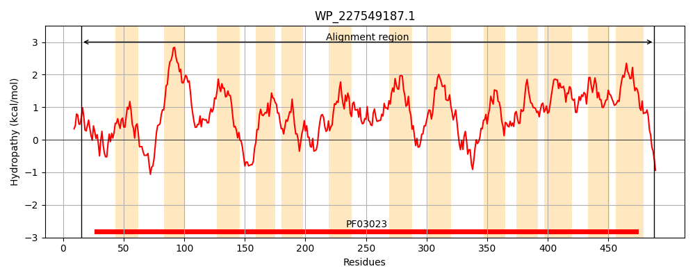
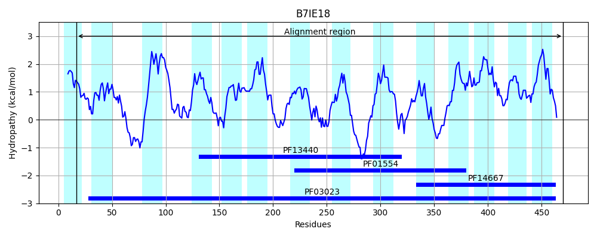
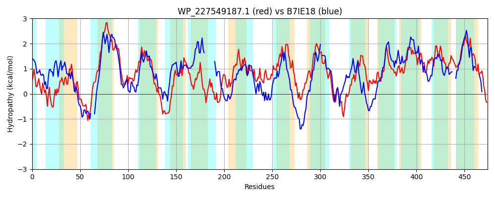

Hit Accession: B7IE18
Hit TCID: 2.A.66.4.8
Hit Description: gnl|BL_ORD_ID|2017 gnl|TC-DB|B7IE18|2.A.66.4.8 Putative lipid II flippase MurJ OS=Thermosipho africanus (strain TCF52B) GN=mviN PE=3 SV=1
Mach Len: 474
e:0.000000
Query TMS Count : 13
Hit TMS Count: 14
TMS-Overlap Score: 6.950000
Predicted Substrates:None
BLAST Alignment:
Score: 263 , Bit scores: 105 bits, E-value: 1.5e-24, Alignment length: 474, Percentage identity: 24
Query: 15 SKGLGLFREILMSKYFGTGEINGAYRIAQSGTLVPINFMISDSLNSAFIPLYKKYLLENTDKAETFKWCIFLLFVIMSSFLFIVLYLFSGFWVDVLAPGINESTRLISINLLKIMALCCPFYLCSALMNYVSMAHNDFKPMSMRNPVQNIGMLIGVFIAYYFDKVEFLAWGFTGSYIYFFMWSLVRKDSKKIIMLPAKFEYVEIKGVIGDFWSILKPLLLLPLLLQGNITLERALSSLVSLEAVSSLDYAKFVTETVVFFLSVPVAFAGLSAWVGLDTNIVKRKLEELYTILIVLGFSVSGFLFFYAEDIIKLLFQRGAFNQHSVEVTSNYLRGMCIGLWAQVIGYIFLKALSAQLKNKKVLFSMAIALFGNAIFNLLTYSTYGALGIGLGCSVYGILLLLSSAYFMGIHKILFYPFIKLLLGMMVYYILIYSFFSNSGLTGLVIVDLAFNGLVYLLFFFVWCMIFRDIRNKFV 488
S+ LGLFR++L +KYFG AY IA +++SAF+PLY + E DK F + F ++ L I+ Y F +++ G + T++++ LL I + F A+ + +N F ++ + NI ++IG F++ + + GS + FF II K +Y F + P + ++ Q N ++ + S ++S L YA +V V+ LS N + L T L S+ G L F + II+ ++ GAF +TS L +GL I ++ A K + I N I +++ YG +G+ L S+ GI+ +L + + I + I L +M++ I + F N ++ + LVYL+F ++ +RD+ +F+
Sbjct: 17 SRILGLFRDVLFAKYFGVSYELDAYFIAIMFPFFLRKVFGEGAMSSAFVPLYSEKSGEEKDK---FLSSVINGFSLIILALVILSYFFPELIINLFGAGSSHETKILAKKLLLITSPSIYFIFLWAISYSILNTNNKFFWPALTPSISNITIIIGTFLSTKYGIISPTIGFLIGSILMFF----------SIIKSIIKHKYYFTIKHFPHFLKLFFPTFMTMVVSQINTVVDMNVVSFYDKGSISYLQYASRFYLLPYGLFAVSVSTVVLSKISNDRKNFNYHLNDALKTTLFFTIPSMVG-LIFLSTPIIRFFYEHGAFTSKDTLITSKILIAYTLGLPFYGIYSTISRSYHAIKNTKTPFIAATIVSLSNIILDIIFGLKYGPIGVALATSIAGIIGVLYLLFSVKTFPIKDFLKISLNSLIMLFVIYLTDFTDNE---FWFLIQILIGILVYLIFSSIF---YRDLIRRFL 470 | Protein Hydropathy Plots: |
|---|
|  |  |
Pairwise Alignment-Hydropathy Plot:
|
|---|
|  |